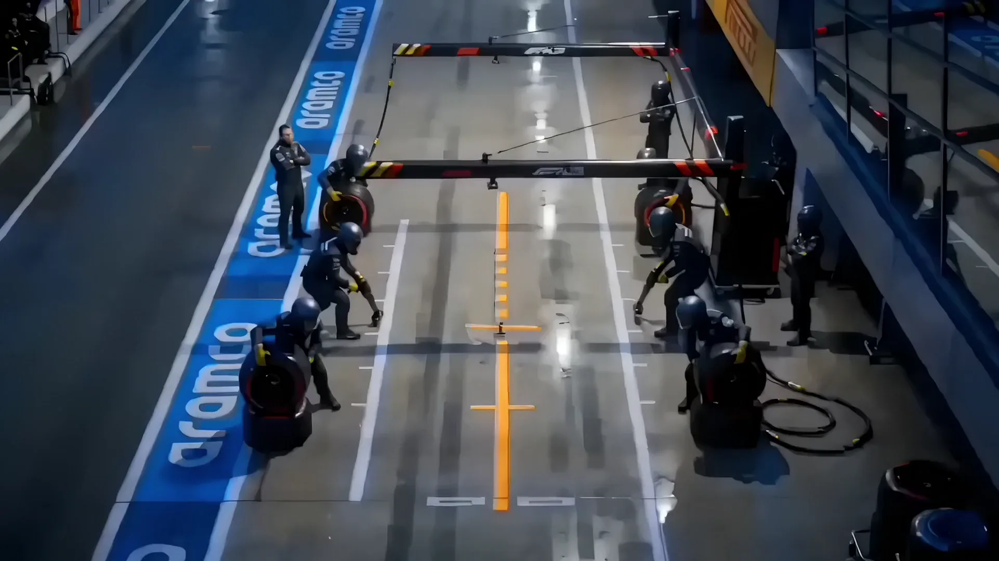
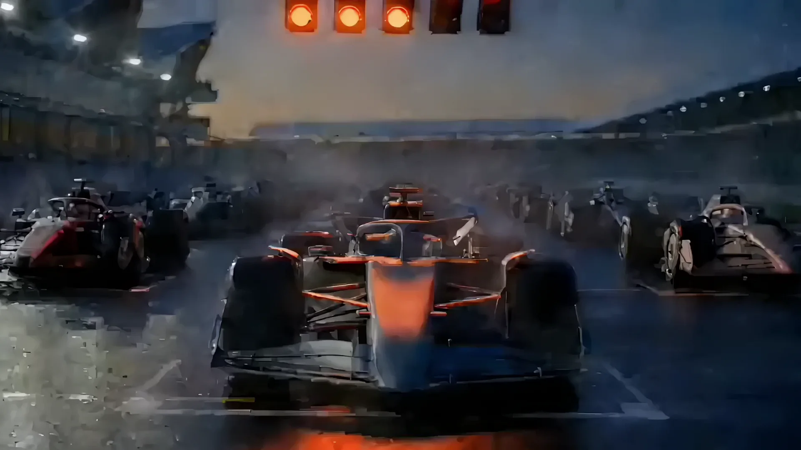
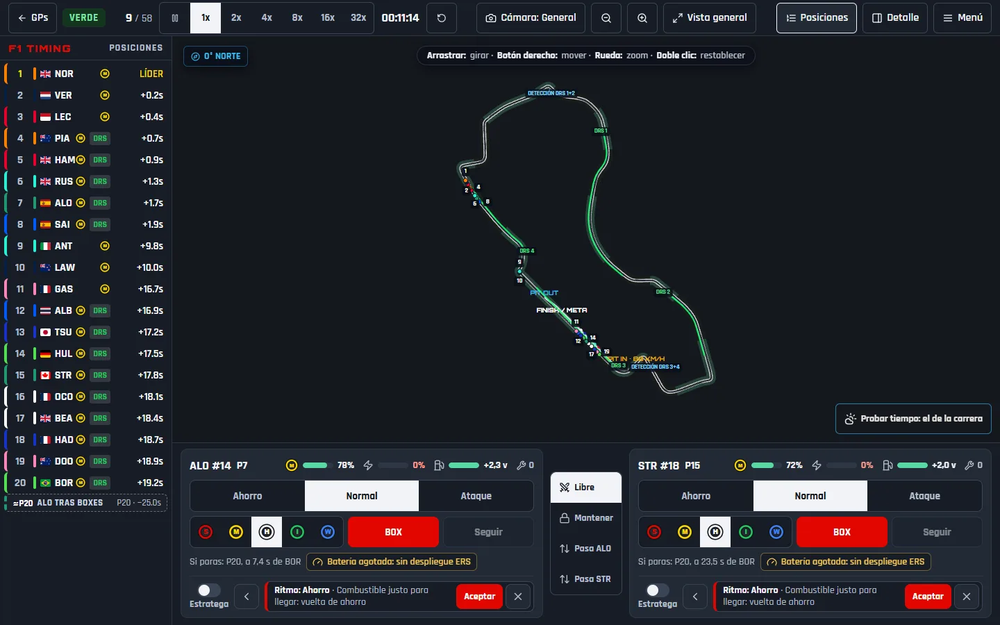
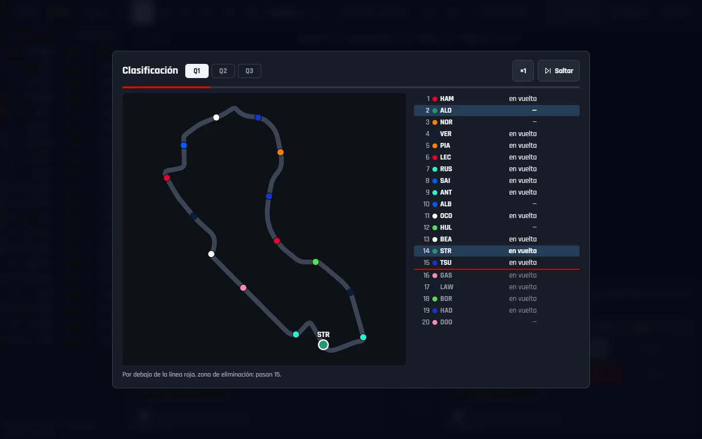
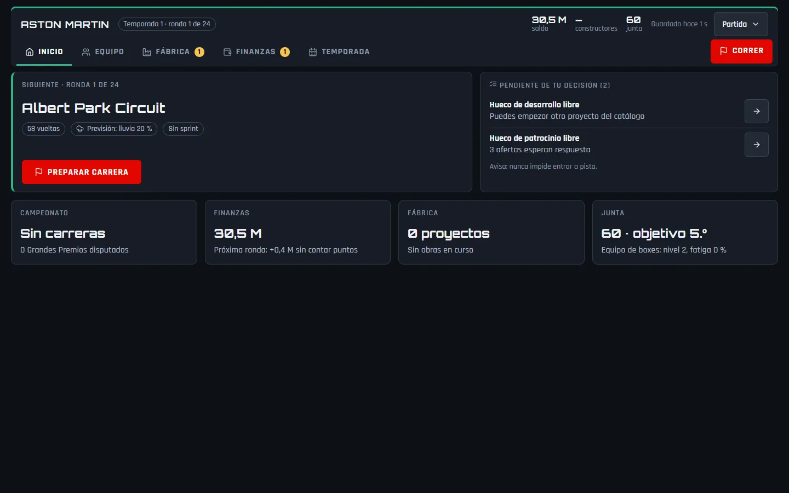
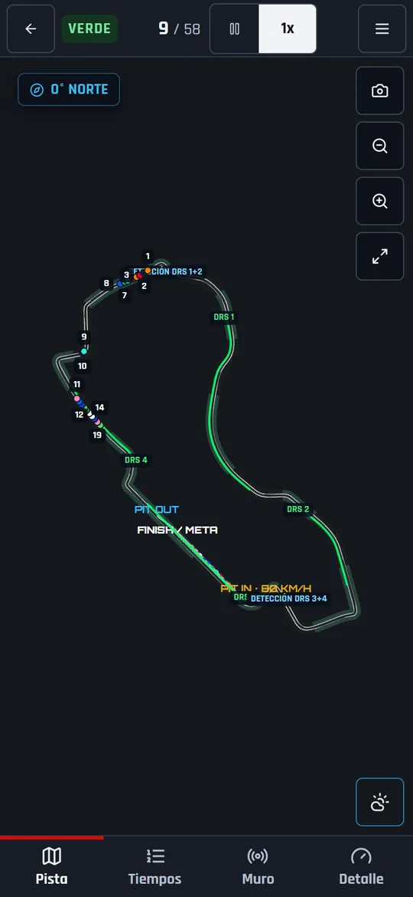
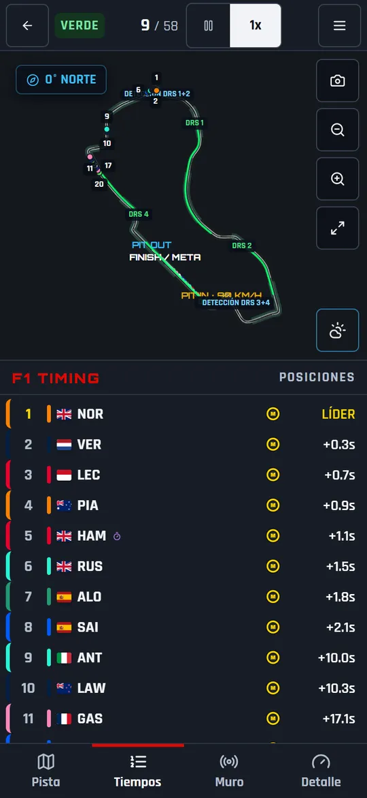
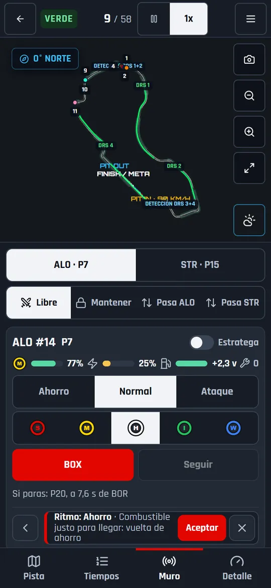

La carrera se decide en el muro
No conduces. Diriges el muro de boxes de tus dos coches, entero en el navegador.
Ningún plan sobrevive a la vuelta 20
- Lluvia
- Celdas que cruzan el circuito y un radar con previsión para verlas venir.
- Dirección de carrera
- Banderas, Safety Car, bandera roja, comisarios y sanciones.
- 23 circuitos
- A escala real, con tiempos calibrados con la temporada 2025.
- Cinco cámaras
- General, seguimiento, cinematográfica, a bordo y helicóptero.
Dos coches, un muro, todas las decisiones
- Ritmo y parada. Ahorro, normal o ataque. Cinco compuestos y un BOX que puedes cancelar.
- Estratega. Propone jugadas en tarjetas: las aceptas o las descartas.
- Órdenes de equipo. Carrera libre, mantener o dejar pasar al compañero.
Pruébalo aquí abajo: elige compuesto y pulsa BOX.

Box, box
Antes de llamar al coche, el muro te dice en qué posición saldría y a cuánto del siguiente. El momento lo eliges tú.
Ahora, la tuya
Elige compuesto en el muro de abajo y pulsa BOX. El crono mide la parada.

El domingo se prepara el viernes
- Libres. Buscar el reglaje, tanda larga o simulación de clasificación.
- Reglajes y espía. Alerón, rigidez y cambio. Y un informe del rival, con riesgo de multa.
- Clasificación en directo. Q1, Q2 y Q3 con zona de eliminación. También hay rondas con sprint.
Entre carrera y carrera, el equipo es tuyo
- Finanzas
- Patrocinadores
- Fábrica y desarrollo
- Personal técnico
- Pilotos y academia
- Unidad de potencia
- La junta
- El invierno
¿Sin tiempo para una ronda? Simúlala: el mismo motor la corre y cuenta como cualquier otra.

El muro cabe en el bolsillo
En el teléfono, la pista queda arriba y los tiempos, el muro y el detalle pasan a pestañas.



Los semáforos están a punto de apagarse
Has llegado a meta sin parar, con los blandos de la salida.